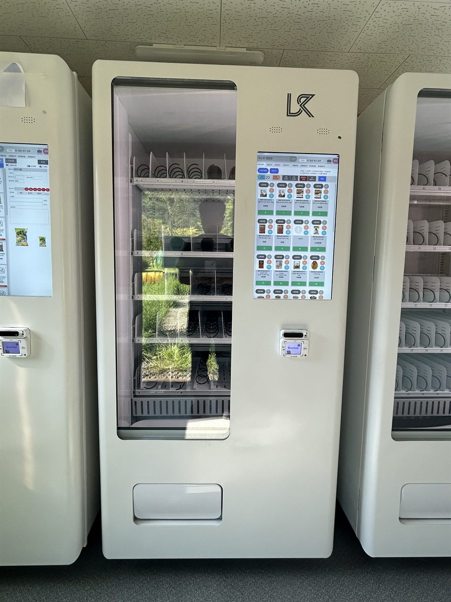

대학 캠퍼스는 하루 종일 붐비는 자리가 아니라, 정해진 10분에만 폭발하는 자리입니다. 강의가 끝나는 종이 울리면 같은 층 학생이 한꺼번에 복도로 나오고, 다음 강의 시작까지 남은 시간은 10분에서 15분입니다. 이 시간 안에 사지 못하면 그날은 안 삽니다. 그래서 캠퍼스 문의를 받으면 매출보다 먼저 보는 것이 그 10분에 몇 명이 줄을 서느냐입니다.
이번 현장도 한 대로는 답이 안 나오는 자리였습니다. 강의동 사이 학생 휴게공간이었는데, 기계 한 대에 결제까지 20~30초가 걸린다고 보면 10분에 스무 명 남짓이 한계입니다. 뒤에 다섯 명만 서 있어도 학생들은 줄을 포기하고 그냥 강의실로 들어갑니다. 그래서 벽면 한 줄을 통째로 써서 세 대를 나란히 붙였습니다. 줄이 세 갈래로 갈라지면 체감 대기가 3분의 1로 줄고, 한 대가 품절이거나 점검 중이어도 옆 기계가 받아 줍니다. 자리를 잡을 때 본 것은 벽 길이와 배전반이었습니다. 냉장 기계 세 대는 압축기가 동시에 돌 수 있어 한 회로에 모두 물리면 안 되고, 층 배전반에서 차단기 여유가 있는지부터 확인한 뒤 회로를 나눠 끌어왔습니다. 바닥은 장판 위 얇은 단차가 있어 세 대 높이가 조금씩 어긋났고, 앞선에 맞춰 수평을 다시 잡았습니다. 기계 위 천장에 조명과 스프링클러가 지나가므로 상부 여유도 미리 재 두었습니다.
양주 대학 캠퍼스에 맞는 구성
세 대를 같은 물건으로 채우면 세 대를 둔 뜻이 없습니다. 기계마다 성격을 갈랐습니다. 한 대는 생수·이온음료·탄산 같은 음료 전용으로 칸을 넓게 잡았습니다. 캠퍼스에서 가장 빨리 비는 칸이 생수라, 이 한 대만 채워도 절반은 해결됩니다. 두 번째는 커피·에너지드링크와 과자·젤리·에너지바를 섞은 간식 혼합, 세 번째는 샌드위치·삼각김밥처럼 끼니를 대신하는 냉장 품목 자리로 뒀습니다. 학생식당이 닫는 시간과 공강 시간에 이 칸이 먼저 비웁니다.
가격대도 나눠 잡는 편이 낫습니다. 학생 손님은 몇백 원 차이에 민감해서, 전 품목을 편의점보다 비싸게 두면 강의 끝나고 교문 앞까지 걸어 나갑니다. 대신 생수와 기본 음료를 편의점 수준 이하로 맞춰 두면, 그 김에 옆 칸 간식까지 같이 집습니다. 결제는 신용·체크카드와 삼성페이·카카오페이·네이버페이를 받고, 현금함은 넣지 않는 쪽을 권해 드립니다. 학생은 대부분 카드나 휴대폰으로 결제하고, 동전을 넣어 두면 잔돈이 막혔다는 연락만 늘어납니다. 칸별 재고와 시간대별 판매는 휴대폰 앱에서 보므로, 세 대를 한 화면에서 비교해 어느 기계가 먼저 비는지 바로 알 수 있습니다.
캠퍼스 자판기, 좋은 점과 어려운 점
좋은 점은 회전이 몰려서 빠르다는 것입니다. 상가 자판기가 하루에 걸쳐 조금씩 팔린다면 캠퍼스는 쉬는 시간마다 한 번에 나가고, 세 대가 동시에 돌기 때문에 같은 시간에 받아낼 수 있는 양이 큽니다. 손님 성격도 안정적입니다. 매일 같은 학생이 같은 동선으로 지나가므로 한두 주만 지나면 어느 칸이 며칠 만에 비는지 거의 고정되고, 채우러 가는 날을 미리 잡을 수 있습니다. 실내라 비바람과 직사광선을 타지 않는 점, 건물 관리자가 있어 파손·도난 걱정이 적은 점도 캠퍼스 자리의 장점입니다.
어려운 점도 솔직히 말씀드립니다. 가장 큰 것은 방학입니다. 학기 중과 방학의 차이가 다른 업종과는 비교가 안 될 만큼 커서, 여름·겨울 방학에는 매출이 크게 내려앉습니다. 연중 고른 수익을 기대하고 들어가면 실망하실 수 있고, 학기 중에 번 것으로 1년을 본다고 생각하셔야 맞습니다. 방학에는 채우는 주기를 늘리고 유통기한이 짧은 냉장 품목을 줄이는 식으로 조절합니다. 품절 관리도 만만치 않습니다. 몰려서 팔린다는 말은 한 번에 비운다는 말이라, 인기 칸은 하루 만에 바닥이 납니다. 앱 알림을 켜 두고 학기 초에는 보충 주기를 짧게 잡는 편이 좋습니다. 마지막으로 교내 설치는 허가 절차가 있습니다. 학교 시설팀이나 총무처의 승인, 전기 사용 방식, 자리 임대 조건을 먼저 정리해야 하므로 상가보다 준비 기간이 깁니다.
양주 무인매장, 이런 자리가 잘 됩니다
양주는 옛 시가지와 새 신도시, 산업단지와 농촌이 한 시에 같이 있는 도시라 자리 성격이 구역마다 확 다릅니다. 은현면에는 서정대학교가 있어 캠퍼스와 그 주변 원룸촌이 한 묶음으로 움직이고, 학기 중에는 대학가 원룸·자취방 상가 쪽 문의가 같이 들어옵니다. 1호선이 지나는 덕정역·덕계역·양주역 주변은 서울로 출퇴근하는 분들이 아침저녁으로 몰리는 자리라, 역 주변 상가와 무인카페·스터디카페 성격이 잘 맞습니다.
옥정동과 고읍동 일대는 결이 다릅니다. 신도시로 아파트가 한꺼번에 들어서면서 단지 상가와 커뮤니티실, 오피스텔 로비 설치가 많습니다. 새 건물이라 전원과 반입 경로가 깨끗해 작업이 수월하고, 아이를 키우는 세대가 많아 음료·간식 회전이 꾸준합니다. 회천동·덕정동 쪽 구도심은 오래된 상가와 학원가가 섞여 있어 독서실·스터디카페·PC방 성격의 자리가 자주 나옵니다. 백석읍 홍죽산업단지와 남면·광적면의 중소 공장 구역은 공장 휴게실과 기숙사가 중심입니다. 교대 근무가 도는 곳은 매점이 닫힌 시간대에 자판기만 남아 회전이 특히 빠릅니다. 장흥면은 송추와 계곡을 낀 나들이 구역이라 주말 방문객이 있는 냉장 음료 중심 자리가 맞고, 나리공원과 회암사지처럼 철마다 사람이 모이는 곳도 기다리는 시간이 생기는 자리라 자판기 성격에 잘 맞습니다.
양주 서비스 지역
옥정동 · 고읍동 · 회천동 · 덕정동 · 율정동 · 삼숭동 · 남방동 · 유양동 · 마전동 · 산북동 · 만송동 · 광사동 · 봉양동 · 고암동 · 회정동 · 삼하동 · 회암동
읍면 — 백석읍 · 은현면 · 남면 · 광적면 · 장흥면
역 — 덕정역 · 덕계역 · 양주역
인접한 의정부 · 동두천 · 포천 · 파주 · 연천까지 같은 조건으로 나갑니다.
양주 무인창업, 이렇게 시작하시면 됩니다
설치비는 받지 않습니다. 자리 확인부터 품목 구성, 기계 반입, 카드 결제 연동, 재고 채우는 방법까지 한 번에 안내해 드립니다. 캠퍼스나 학원처럼 사람이 많은 건물은 강의가 도는 시간에 기계를 들이면 서로 불편하므로, 이른 아침이나 저녁 시간으로 반입을 잡습니다. 여러 대를 붙일 생각이라면 견적 전에 벽 길이와 차단기 여유, 엘리베이터·출입문 폭 세 가지를 먼저 봅니다. 특히 세 대 이상은 회로를 나눠야 하므로 배전반 확인이 빠지면 나중에 전기 공사가 다시 들어갑니다. 처음부터 세 대가 부담스러우면 한 대로 시작해 한 학기 회전을 보고 늘리는 방식도 많이 하십니다.
비용은 구입이 렌탈보다 유리한 편입니다. 렌탈료를 몇 년 내는 것보다 처음에 사 두는 쪽이 총액이 낮게 나오는 경우가 많고, 대수가 늘수록 차이가 커집니다. 구성별 36개월 총비용은 구입 vs 렌탈 비교 가이드에 정리해 두었습니다.
양주 무인자판기 설치 상담
세워 둘 자리 사진 한 장만 보내 주셔도 됩니다. 남는 벽 길이와 콘센트, 반입 경로를 보고 몇 대가 들어갈지 먼저 봐 드린 뒤 견적을 보내 드립니다.
※ 사진은 픽포스가 시공한 설치 사례이며, 글에 적힌 지역의 현장 사진은 아닙니다. 자판기 구성과 품목은 자리와 업종에 따라 달라지며, 교내·다중이용 건물 설치는 시설 담당 부서의 승인 조건과 전원 용량, 반입 경로를 현장에서 먼저 확인합니다. 정확한 금액은 견적서로 안내드립니다.